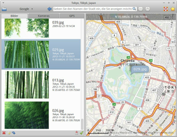

GottenGeography
Dieser Artikel wurde für die folgenden Ubuntu-Versionen getestet:
Ubuntu 16.04 Xenial Xerus
Ubuntu 14.04 Trusty Tahr
Zum Verständnis dieses Artikels sind folgende Seiten hilfreich:
GottenGeography  dient zum nachträglichen Hinzufügen des Aufnahmeort bei Fotos (Geocoding). Dabei beschränkt sich das Programm nicht nur auf lokal gespeicherte Bilder, sondern kann auch direkt auf eine angeschlossene Digitalkamera zugreifen. Obwohl für die GNOME Shell entwickelt, kann es auch unter anderen, GTK-basierenden Oberflächen genutzt werden (dieser Artikel ist unter Xfce entstanden).
dient zum nachträglichen Hinzufügen des Aufnahmeort bei Fotos (Geocoding). Dabei beschränkt sich das Programm nicht nur auf lokal gespeicherte Bilder, sondern kann auch direkt auf eine angeschlossene Digitalkamera zugreifen. Obwohl für die GNOME Shell entwickelt, kann es auch unter anderen, GTK-basierenden Oberflächen genutzt werden (dieser Artikel ist unter Xfce entstanden).
Funktionen:
Manuelle nachträgliche Geokodierung. Kartendaten stammen aus dem Projekt OpenStreetMap.
Unterstützung von GPS-Tracks. Unterstützte Formate sind CSV, GPX, KML und TCX.
Anzeige vorhandener Bilder mit Geodaten in der Kartenansicht
lokale GeoNames
-Datenbank für Ortsnamen. Angaben zu Stadt, Region/Bundesland und Staat werden automatisch als IPTC-Daten gespeichert.Erhältlich in fünf Sprachen: Englisch, Deutsch, Französisch, Schwedisch und Spanisch
Damit es besonders für diejenigen interessant, deren Digitalkamera oder Handy keinen integrierten GPS-Empfänger besitzt. Erstellt wurde das Programm mit Python. Alternative Programme zur Geokodierung von Fotos sind im Artikel Metadaten/Geokodierung zu finden.
Hinweis:
GottenGeography befindet sich in aktiver Entwicklung. Die Grundfunktionen sind bereits nutzbar, bei Bedienung und Programmoberfläche muss noch gefeilt werden. Die als Grundlage für diesen Artikel verwendete Version 2.2 für Ubuntu 12.04 ist inzwischen nicht mehr verfügbar. Es kann daher zu Abweichungen in den Abschnitten Benutzung, Einstellungen und Tastenkürzel kommen.
Installation¶
 Das Programm ist nicht in den offiziellen Paketquellen enthalten. Zur Installation muss man daher auf ein "Personal Package Archiv" (PPA) [1] des Entwicklerteams ausweichen.
Das Programm ist nicht in den offiziellen Paketquellen enthalten. Zur Installation muss man daher auf ein "Personal Package Archiv" (PPA) [1] des Entwicklerteams ausweichen.
PPA¶
Adresszeile zum Hinzufügen des PPAs:
ppa:gottengeography/ppa
Hinweis!
Zusätzliche Fremdquellen können das System gefährden.
Ein PPA unterstützt nicht zwangsläufig alle Ubuntu-Versionen. Weitere Informationen sind der  PPA-Beschreibung des Eigentümers/Teams gottengeography zu entnehmen.
PPA-Beschreibung des Eigentümers/Teams gottengeography zu entnehmen.
Damit Pakete aus dem PPA genutzt werden können, müssen die Paketquellen neu eingelesen werden.
Nach dem Aktualisieren der Paketquellen kann das folgende Paket installiert [2] werden:
gottengeography (ppa)
 mit apturl
mit apturl
Paketliste zum Kopieren:
sudo apt-get install gottengeography
sudo aptitude install gottengeography
Benutzung¶
Bei Ubuntu-Varianten mit einem Anwendungsmenü erfolgt der Start [3] über den Menü-Eintrag "Grafik -> GottenGeography".

Nach dem Programmstart stehen links neben der Karte drei Reiter (Tabs) zur Verfügung:
Bilder
Kameras (direkter Zugriff auf eine angeschlossene Digitalkamera)
GPS (für GPS-Logger oder GPS-Tracks)
Vorher kann es sinnvoll sein, zunächst eine Kartendarstellung auszuwählen. Dies geschieht über das Auswahlfeld
↓ rechts neben der Schaltfläche "Google" (die Google Maps  in einem Browserfenster öffnet). Von Openstreetmap zur Verfügung gestellt werden:
in einem Browserfenster öffnet). Von Openstreetmap zur Verfügung gestellt werden:
MapQuest OSM
Maps for Free Relief
OpenStreetMap Cycle Map
OpenStreetMap Mapnick
OpenStreetMap Transport Map
Grundlegende Programmfunktionen sind der folgenden Tabelle zu entnehmen.
| Funktionen | ||
| Schaltfläche | Tastenkürzel | Beschreibung |
| Strg + O | Bilder oder GPS-Tracks laden (wenn Drag'n'Drop nicht funktioniert) | |
| Kartenauswahl (über den Pfeil rechts neben der Schaltfläche) | ||
 | Strg + + | Karte vergrößern |
 | Strg + - | Karte verkleinern |
| Strg + ? | englische Hilfeseiten zum Programm (Grundlagen, Tastenkürzel, Setzen der Zeitzone) | |
 | Strg + W | Ausgewählte Bilder schließen |
| Strg + Z | Ausgewählte Bilder neu laden (Änderungen gehen verloren) | |
| Strg + J | Ausgewähltes Bild in der Mitte der Karte zentrieren (lädt den passenden Kartenausschnitt) | |
 | Strg + S | Alle Bilder speichern |
| Strg + ⏎ | Ausgewählte Bilder in der Mitte der Karte platzieren | |
Bilder¶
Nach dem Laden der Bilder zieht man das ausgewählte Bild einfach bei gedrückter linker Maustaste  auf die Karte und korrigiert bei Bedarf die Position. Solange man die Geokodierung nicht explizit speichert, kann diese über das Rücksetzen des Bilds wieder entfernt werden. Wenn noch ungespeicherte Änderungen vorliegen, erfolgt spätestens beim Beenden des Programms eine Rückfrage, um die Speicherung nachzuholen.
auf die Karte und korrigiert bei Bedarf die Position. Solange man die Geokodierung nicht explizit speichert, kann diese über das Rücksetzen des Bilds wieder entfernt werden. Wenn noch ungespeicherte Änderungen vorliegen, erfolgt spätestens beim Beenden des Programms eine Rückfrage, um die Speicherung nachzuholen.
Um bei Fotos mit einer vorhandenen Geokodierung automatisch den Kartenausschnitt vergrößern, benutzt man (nach Auswahl des jeweiligen Fotos) die Schaltfläche . Man kann bereits vorhandene Tags nicht mehr entfernen, sondern nur noch korrigieren.
Kameras¶
GottenGeography kann auch direkt auf die Fotos einer angeschlossenen (und vom System erkannten) Digitalkamera zugreifen. Da die Kamera der Autors nicht erkannt wurde, bleibt dieser Punkt ungetestet. Praktisch sind an dieser Stelle verschiedene Möglichkeiten zur Korrektur der Kamerazeit, was dann wichtig wird, wenn man mit GPS-Tracks arbeiten möchte.
GPS¶
Erfolgreich getestet wurde das Laden von GPS-Tracks mit verschiedenen GPX-Dateien. Sollte es Probleme mit anderen GPS-Tracks geben, kann man diese mit GPSBabel in ein passendes Format konvertieren. Im Gegensatz zur Bildanzeige wird der Kartenausschnitt mit den Trackdaten automatisch verschoben und vergrößert. Darüber hinaus ist es möglich, mit mehreren GPS-Tracks zu arbeiten.
Einstellungen¶
 Die getestete Version 2.2 enthält keinen Einstellungsdialog. Dieser ist erst in neueren Versionen vorgesehen.
Die getestete Version 2.2 enthält keinen Einstellungsdialog. Dieser ist erst in neueren Versionen vorgesehen.
Tastenkürzel¶
| Weitere Tastaturkürzel | |
| Taste(n) | Funktion |
| Strg + A | Alle Fotos markieren |
| Strg + X | Alle GPX-Tracks von Karte entfernen |
| Alt + ↑ | Kartenausschnitt nach oben (Norden) verschieben |
| Alt + ↓ | Kartenausschnitt nach unten (Süden) verschieben |
| Alt + ← | Kartenausschnitt nach links (Westen) verschieben |
| Alt + → | Kartenausschnitt nach rechts (Osten) verschieben |
| Strg + Q | Programm beenden |
Links¶
Metadaten
 Informationen in Dateien einbetten
Informationen in Dateien einbettenMetadaten/Geokodierung - Programmübersicht
Grafik
Übersichtsartikel
- Erstellt mit Inyoka
-
 2004 – 2017 ubuntuusers.de • Einige Rechte vorbehalten
2004 – 2017 ubuntuusers.de • Einige Rechte vorbehalten
Lizenz • Kontakt • Datenschutz • Impressum • Serverstatus -
Serverhousing gespendet von